-
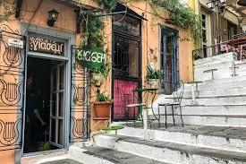
- Area: Plaka
- Tip by Nikos: Order any of the deserts (Portokalopita is too good to miss :))
- How close to Syntagma Square: 10 min 🚶🚶🚶
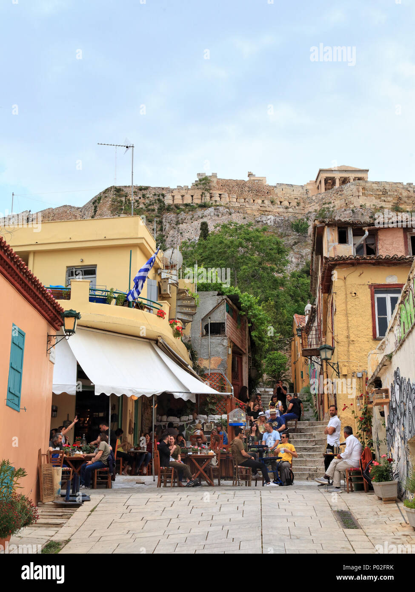
Area: Plaka
Tip by Nikos: Here is a must to have a greek (or turkish) traditional coffee
How close to Syntagma Square: 9 min 🚶🚶🚶
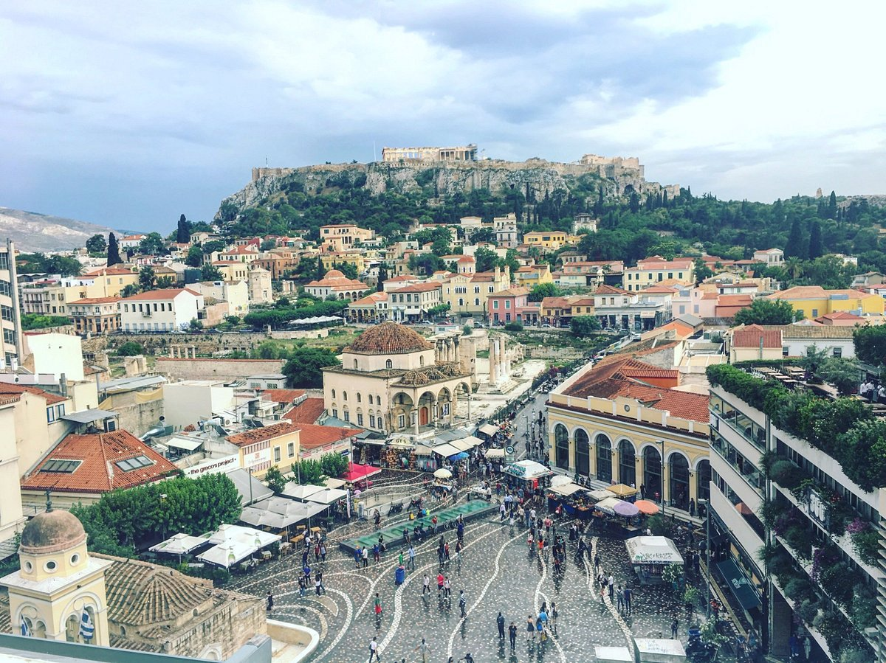
Area: Monastiraki
Tip by Nikos: A little bit on the Hipster side of a place. You can enjoy the view though!
How close to Syntagma Square: 9 min 🚶🚶🚶
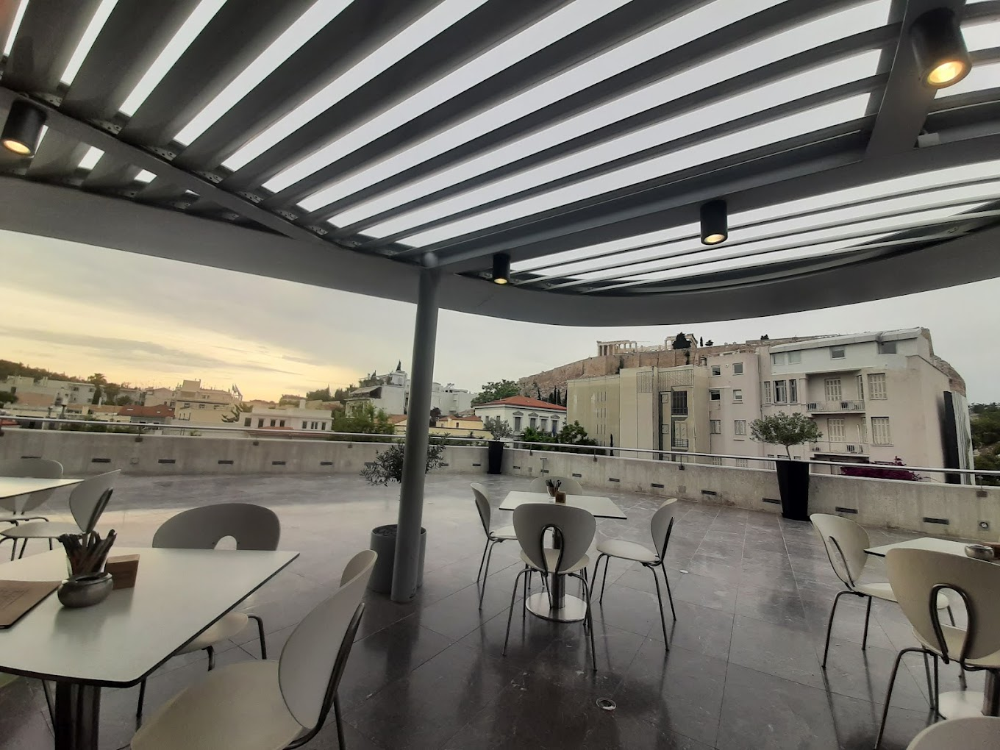
Area: Akropolis
Tip by Nikos: I come here for the whole vibe of it :)
How close to Syntagma Square: 15 min 🚶🚶🚶
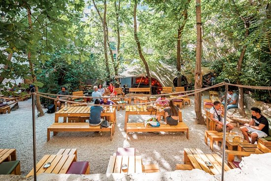
Area: Monastiraki
Tip by Nikos: Nice hidden place in the heart of the city. It's ok
How close to Syntagma Square: 10 min 🚶🚶🚶
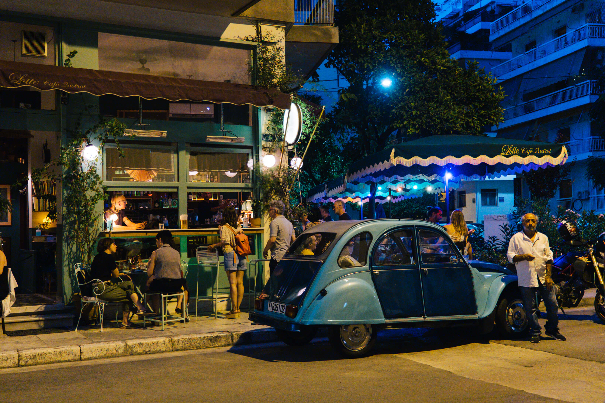
Area: Pagrati
Tip by Nikos: Nice coffee and nice people. You can enjoy one (or two) 'early beers' also here
-
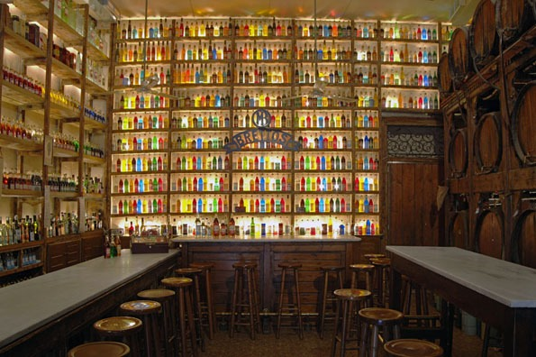
- Area: Plaka
- Tip by Nikos: A special place in the heart of Plaka. More than 30 flavors of liquer you can choose from.
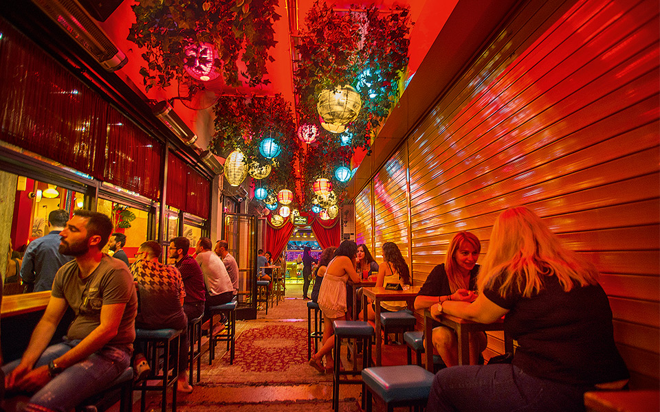
Area: Historic Centre
Tip by Nikos: Nice place for having a first drink. Drink one here and then go the next one in the list :)
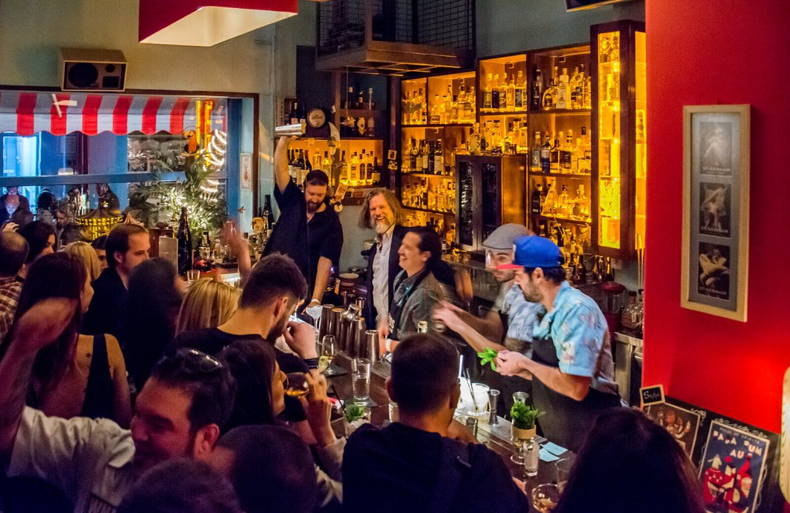
Area: Historic Centre
Tip by Nikos: Best place for having a coctail in Athens 🍸
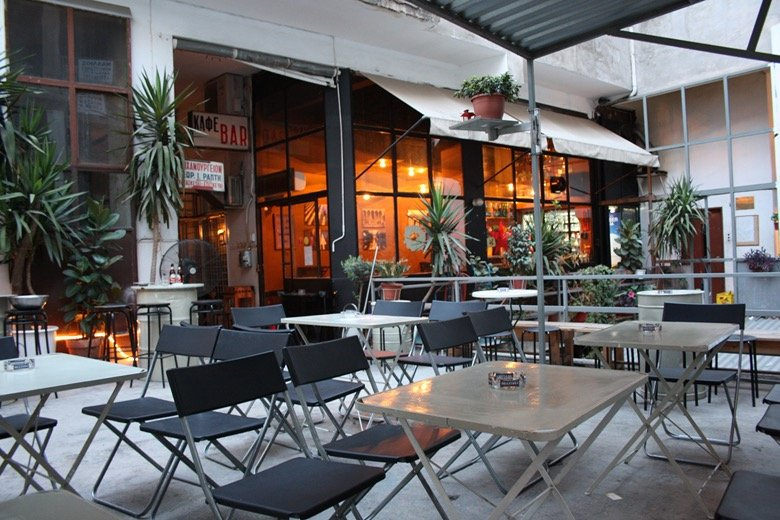
Area: Monastiraki
Tip by Nikos: Very lowkey place with great drinks and a big variety of beers. Nice music too :)
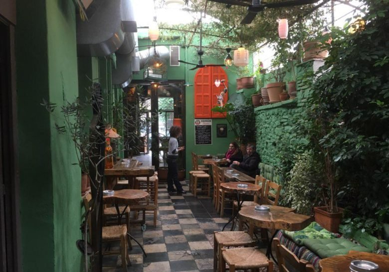
Area: Kerameikos
Tip by Nikos: Can be crowdy, but it is the place to go, having the last ..many.. drinks of the night. Nice neighboorhood also